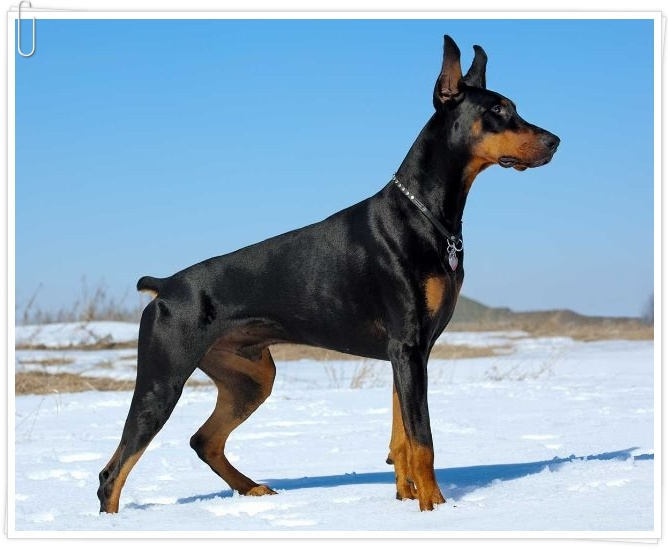

건강한 강아지 만들기 프로젝트
-

-
하룻밤만 자도 쑥쑥 크는 강아지들에게는 세심한 관심이 필요합니다. 멋진 골격을 가진 튼튼한 애견을 만들 수 있느냐 없느냐는 어린 강아지 시기의 영양공급과 건강관리가 크게 좌우하기 때문인데요.그럼 어떻게 하여 건강하고 멋있는 강아지를 만들수 있는지 알아보겠습니다.
1. 강아지 건강검진 왜 해야 하는가.
대부분 많은 분들이 내 강아지가 건강하다고 강아지 건강검진을 시키지 않는데요. 강아지들도 사람과 같이 정해진 시기마다 검진을 받는게 좋은데요. 혹시 모르는 질병과 감염여부를 미리 알고 치료해줄수 있고 혹시 모르는 상황에 미리 대처할수 있게 됩니다.
2. 강아지도 알레르기가 있나요?
결과적으로 말씀드리면 있습니다. 강아지들도 사람과 같이 강아지의 면역체계는 사람처럼 알레르기 항체인 면역글로불린을 생성합니다. 강아지는 꽃가루, 벼룩 알레르기와 같은 계절성 알레르기와 특정 음식 (주로 단백질)에 대한 알레르기를 보입니다